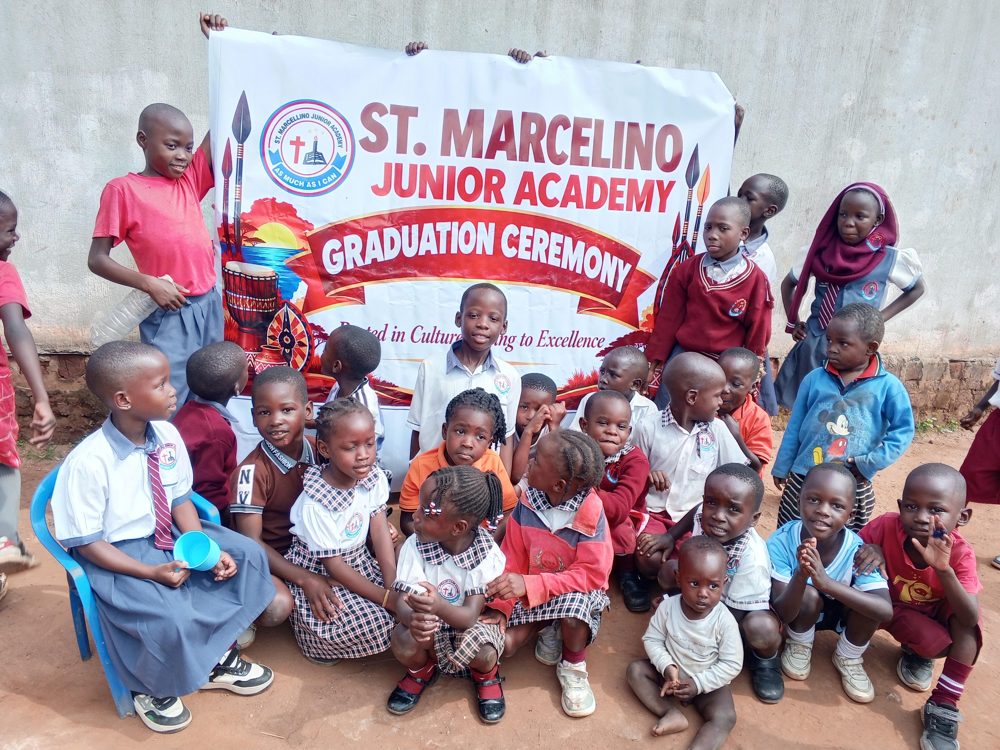

Speech Day · Pupil performances
A joyful celebration of dance and talent
Our pupils brought the Speech Day stage to life with confident dance, music, and colourful performances.
Read the full story
Our pupils brought the Speech Day stage to life with confident dance, music, and colourful performances.
Read the full story
Traditional dress, expressive movement, and teamwork made the pupils' cultural dance a highlight.
Read the full story
Teachers joined hands to sweep, gather leaves, and care for shared spaces around the school.
Read the full story
Parents and friends added to the festive spirit by sharing in the children's special day.
Read the full story
New classroom photos show pupils studying together and taking part in day-to-day learning.
Read the full story
Children come together beneath the school banner to mark a memorable graduation celebration.
Read the full storyWe look forward to welcoming you and your family.